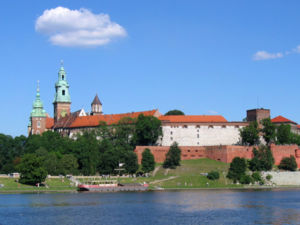

Guide to the City |
|||||||||||
Navigation |
KrakowKraków (Polish: Kraków; (pronounced: ['krakuf]); variant English spelling Cracow; in full Royal Capital City of Krakow,
Polish: Królewskie Stołeczne Miasto Kraków) is one of the oldest and largest cities in Poland. In 2014 in Kraków lived

759,800 people. It is on the Vistula river. Krakow is the capital of Lesser Poland Voivodeship (województwo małopolskie);
before that it was the capital of Kraków Voivodship (since 14th century).
During the mid-early 19th century, Krakow became an independent city-state, under the name of "The Free, Independent
and Strictly Neutral City of Krakow". However, it was annexed by Austria-Hungary in 1846.
Pope John Paul II was raised in Krakow and was its archbishop from 1964 until he was elected as Pope in 1978. When
it was later announced that the city will host World Youth Day in 2016, it will be a tribute to the late Pope who
became a saint in 2014. 1. Polish pronunciation: Cracow or Krakow Tonight in Krakow:
|
||||||||||